65초 안에 서비스를 출시하라! · 1인 제작 · Windows 오프라인 실행 (HTML 파일 하나)
65초제한 시간 (미스 1회 −2초)
3층 + 보스기획 → 개발 → 테스트 → D-Day
6종층마다 무작위 미니게임
약 3분한 판 플레이 시간
1게임 소개
2실행 방법
3조작 방법
4한 판의 흐름 (그림으로 보기)
5플레이 화면 읽는 법
6미니게임 6종
7스테이지 진행 화면
8WARNING · 보너스 스테이지
9카드 · 아이템 · 상점 · 루트
10최종 보스 「출시 D-Day」
11엔딩 · 결과 · 랭킹
12효과음 · 배경 음악
13제작 정보
위 그림: 대기 화면. 왼쪽은 타이틀과 시작 안내, 오른쪽은 전체 랭킹 TOP 10입니다. (설명서의 랭킹 이름·점수는 예시 기록)
1게임 소개ABOUT
신입 개발자가 되어 업무 몬스터를 쓰러뜨리며 기획 → 개발 → 테스트를 지나 제한 시간 65초 안에 서비스를 출시하는 짧은 아케이드 게임입니다. 한 판은 약 3분입니다.
층마다 미니게임 6종 중 하나가 무작위로 나옵니다: 배포 타이밍 · 커맨드 입력 · 장애 알림 · 코드 리뷰 분류 · 컴파일 차지 · 알림 두더지
층 사이에는 다음 층을 미리 맛보는 WARNING 중간보스, 마지막에는 체력 바가 있는 최종 보스 「출시 D-Day」가 기다립니다.
카드 · 아이템 · 상점 · 룰렛으로 판마다 다른 전략을 세웁니다. 신기술 도입 루트는 더 어렵지만 점수가 크게 오릅니다.
미스하면 제한 시간 −2초. 시간이 0초가 되면 게임 종료, 보스를 쓰러뜨리면 출시 성공!
2실행 방법HOW TO RUN
ZIP 파일의 압축을 풉니다.
「게임실행.html」을 더블클릭합니다. Microsoft Edge 또는 Chrome에서 열립니다(Windows 기본 Edge 권장). 다른 프로그램으로 열리면: 파일 오른쪽 클릭 → 연결 프로그램 → Microsoft Edge
전체 화면은 F11.
대기 화면에서 Enter(또는 클릭) → 닉네임 입력 → Enter로 시작합니다.
설치나 인터넷 연결이 필요 없습니다. 소리는 브라우저 정책상 첫 키 입력 뒤부터 나며, M 키로 켜고 끕니다.
대기 화면에서 15초 동안 아무것도 누르지 않으면 데모 플레이가 자동으로 흘러갑니다. 아무 키나 누르면 바로 닉네임 입력으로 넘어갑니다.
닉네임 입력랭킹에 표시될 이름을 1~10자로 입력합니다. 지난번 이름이 미리 채워져 있으며, Enter를 누르면 1층이 시작됩니다.
3조작 방법CONTROLS
공통
Space / Enter 시작 · 다음으로 Esc 일시정지 M 소리 123 · ←→ 카드 · 아이템 · 루트 고르기 (마우스 클릭 가능)
배포 타이밍
커서가 초록 구간에 오면 Space (클릭 가능)
커맨드 입력
화살표 순서대로 방향키 (WASD 가능). 빨간 화살표는 반대 방향, ?는 차례가 되면 공개
장애 알림
신호가 초록불로 바뀌는 순간 Space. 노란불은 함정
코드 리뷰 분류
버그 카드면 ←(반려), 정상 카드면 →(승인) · A / D 가능
컴파일 차지
Space(또는 마우스)를 꾹 누르고, 게이지가 초록 구간에 오면 손을 뗌
알림 두더지
알림이 뜬 칸의 방향키 ←↓→ (A S D). 👑 대표님 메시지는 누르지 않기
피버 · 보스 그로기
아무 키나 연타 → 피버 점수, 최종 보스 체력 깎기 (꾹 누르기는 인정 안 됨)
상점
123 구매 · R 새로고침 · G 랜덤 뽑기 · Enter 나가기
4한 판의 흐름ONE RUN
한 판은 아래 순서로 진행됩니다. 그림의 번호 순서대로 화면이 바뀝니다.
닉네임 입력이번 판 1·2·3층 미니게임이 정해짐1층 · 기획안전 루트로 바로 시작
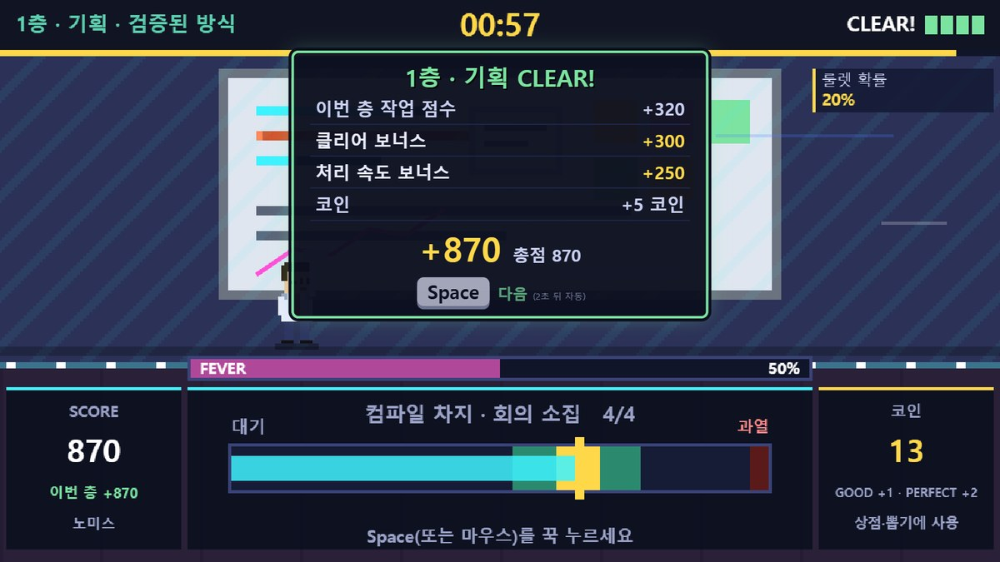
정산표작업 점수·클리어·속도 보너스
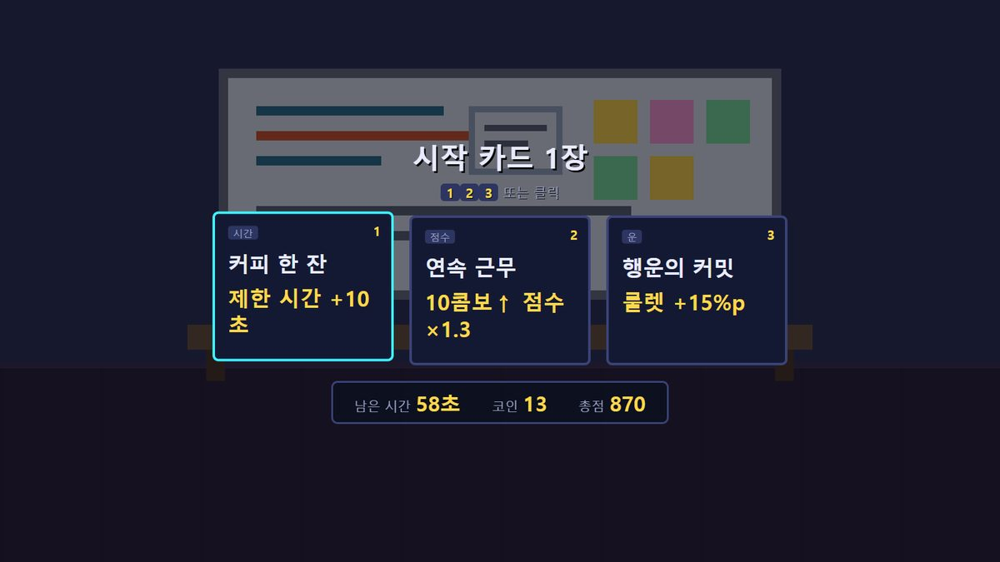
시작 카드3장 중 1장으로 빌드 시작⚠ WARNING다음 층 미니게임 8초 미리보기
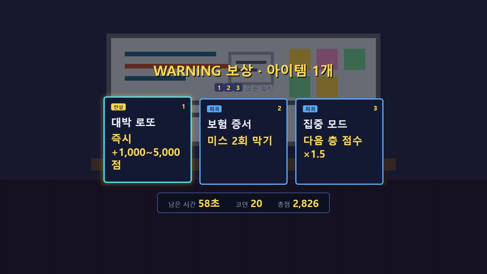
WARNING 보상아이템 3개 중 1개
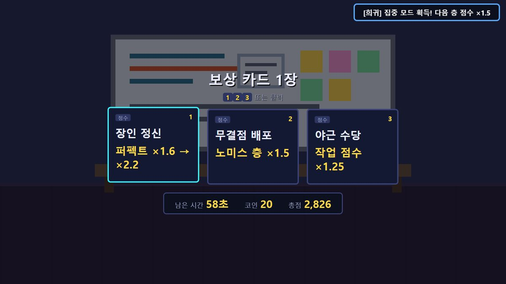
보상 카드 · 룰렛(가끔 보너스 스테이지)
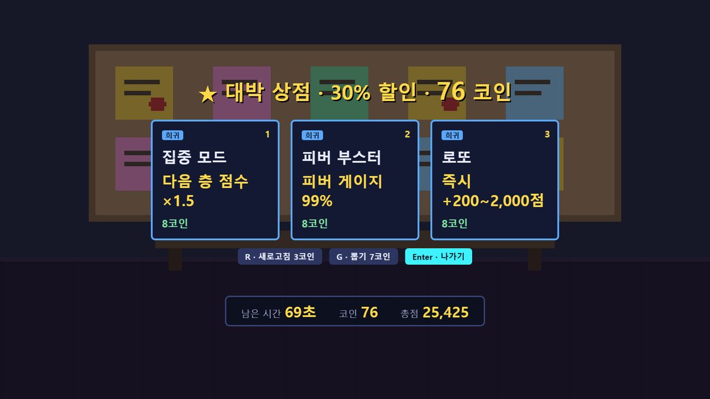
이벤트상점 · 랜덤 카드 · 없음
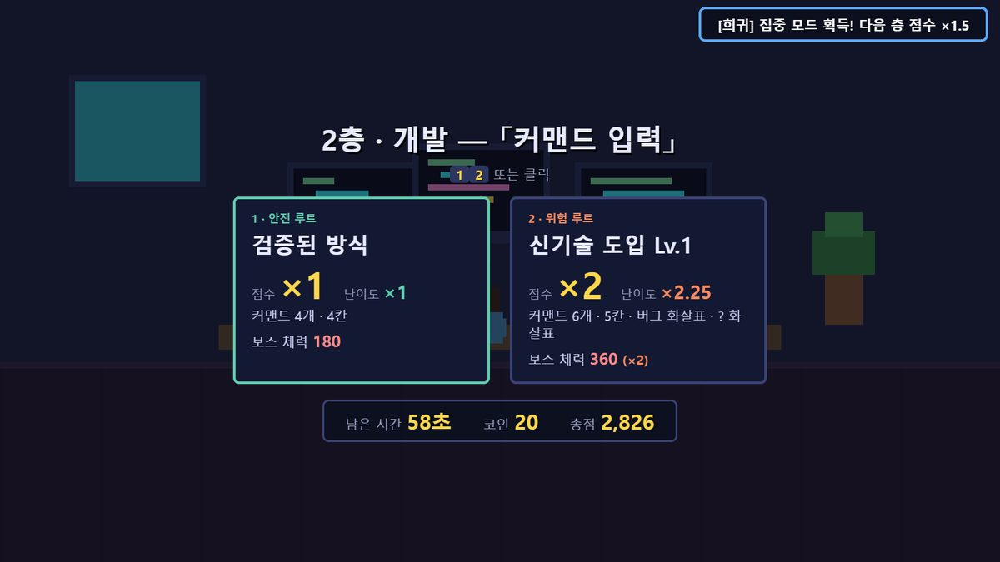
루트 선택검증된 방식 / 신기술 도입
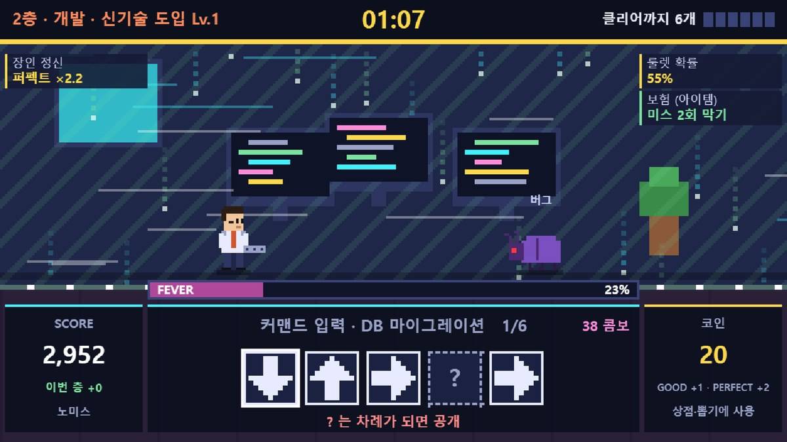
2층 · 개발 → 3층 · 테스트WARNING부터 같은 순서 반복
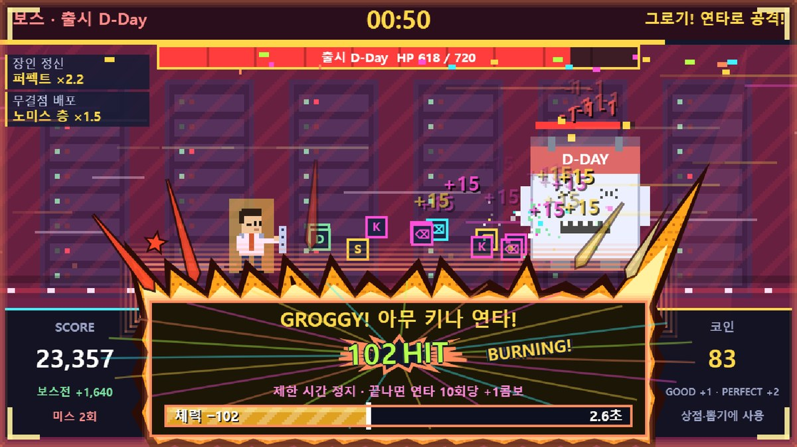
최종 보스미니게임 4개 → 그로기 연타 반복
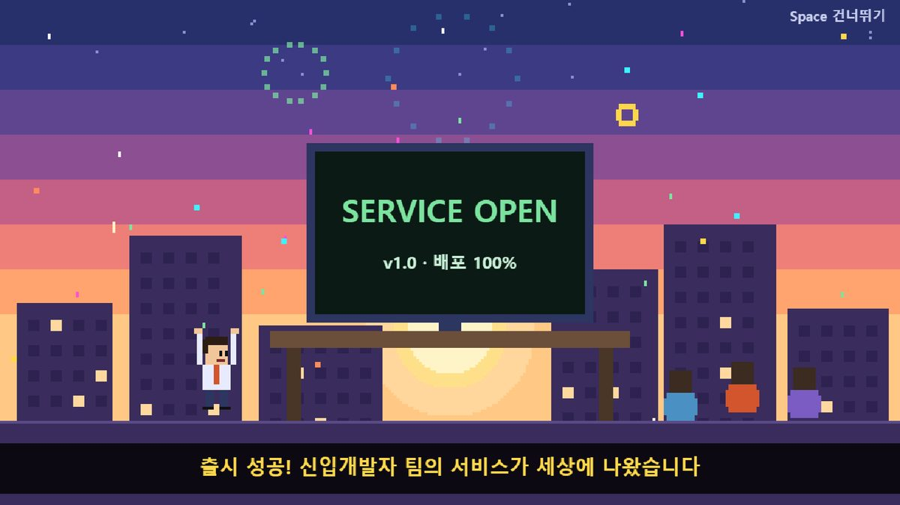
출시 컷신성공 SERVICE OPEN / 실패 DEPLOY FAILED
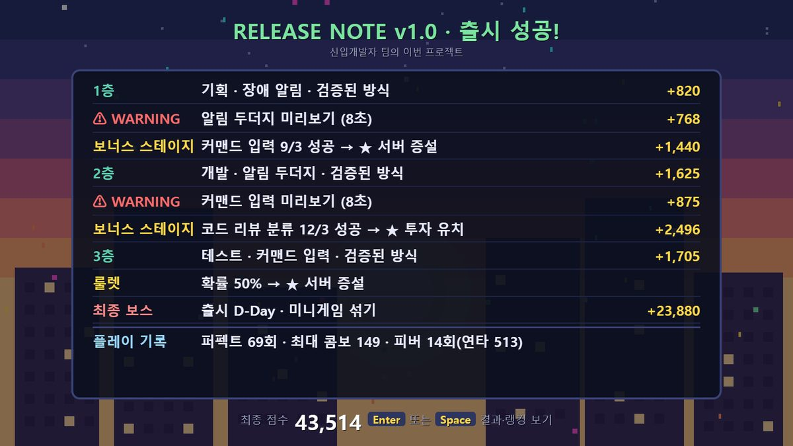
엔딩이번 판 기록(RELEASE NOTE)결과 · 랭킹등급 · 칭호 · TOP 5다음 사람Enter로 대기 화면
닉네임 → 1층 → 시작 카드 → WARNING → 아이템 → 보상 카드 · 룰렛 · 이벤트 → 루트 → 2층 → WARNING → … → 3층 → 최종 보스 → 출시 컷신 → 엔딩 → 결과 · 랭킹
카드 · 루트 선택, 룰렛, 정산표, WARNING, 보너스 스테이지, 피버 연타 · 보스 그로기 중에는 제한 시간이 멈춥니다. 시간은 미니게임을 하는 동안에만 흐릅니다.
5플레이 화면 읽는 법HUD
12345678910
1스테이지 · 루트 — 지금 층(2층 · 개발)과 고른 루트(신기술 도입 Lv.1)
2남은 시간 — 미스하면 깜빡이며 −2초. 0이 되면 게임 종료
3클리어까지 남은 작업 — 칸이 모두 차면 층 클리어. 마지막 1개는 깜빡임
4보유 카드 — 모은 카드와 현재 효과 수치 (예: 성과급 → 층 클리어 ×1.5)
5룰렛 확률 · 아이템 버프 — 다음 룰렛 당첨 확률, 보험, 이번 층 버프
6전투 연출 — 성공하면 주인공이 키보드로 공격, 미스하면 몬스터가 반격
7FEVER 게이지 — 성공·퍼펙트로 차오르고, 가득 차면 피버 타임
8SCORE — 총점, 이번 층 점수, 미스 횟수
9미니게임 패널 — 미니게임 이름 · 작업 이름 · 진행(1/3) · 콤보, 아래에 조작 안내
10코인 — GOOD +1 · PERFECT +2. 상점 · 뽑기에 사용
층마다 바뀌는 배경과 몬스터
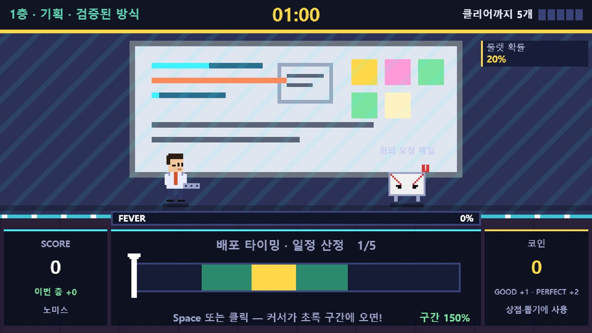
1층 기획 — 화이트보드 회의실, 몬스터는 「회의 요청 메일」2층 개발 — 모니터가 늘어선 개발실, 몬스터는 「버그」
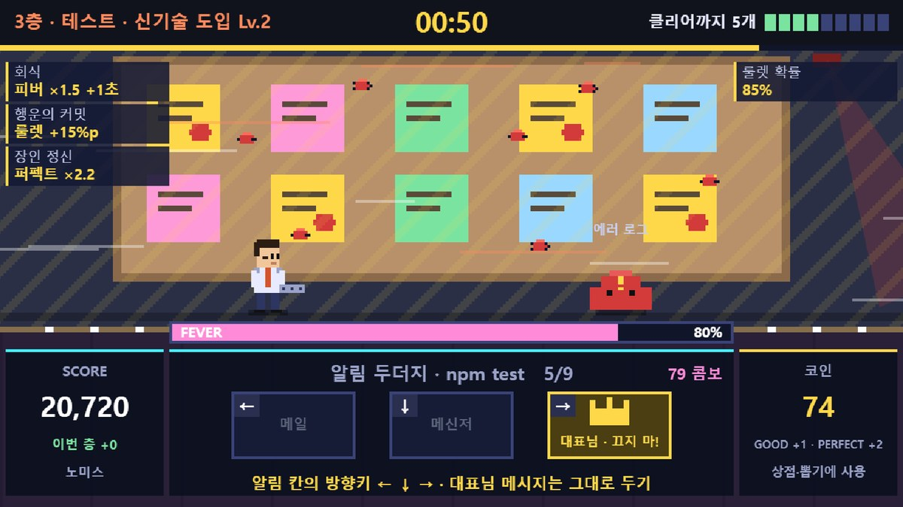
3층 테스트 — 포스트잇 보드, 몬스터는 「에러 로그 슬라임」
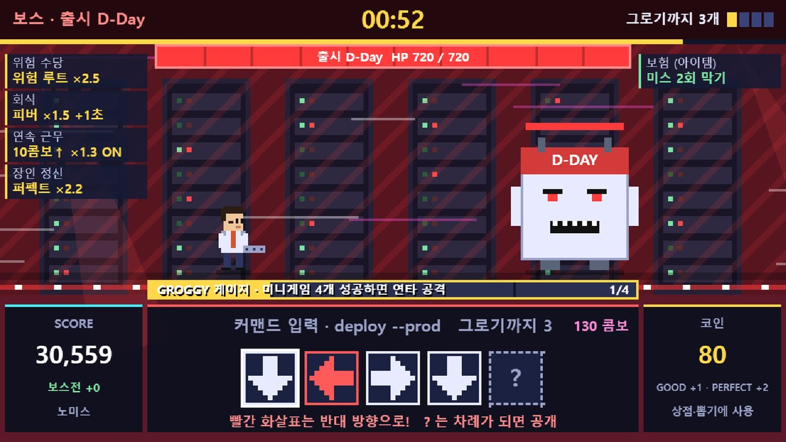
최종 보스 — 붉은 서버실, 거대 「D-DAY 달력」
6미니게임 6종MINI GAMES
판마다 6종 중 3종이 1·2·3층에 무작위로 배정됩니다. 아래 그림은 각 미니게임의 플레이 패널(화면 아래쪽 가운데)을 확대한 것입니다. 빠르고 정확할수록 PERFECT(점수 ×1.6 · 코인 +2)가 됩니다.
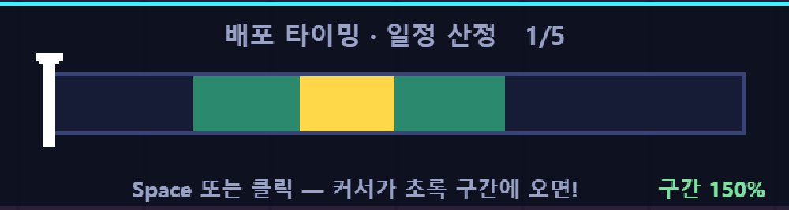
①배포 타이밍 Space
커서가 진행 바를 왕복합니다. 초록 구간에 들어왔을 때 Space. PERFECT 가운데 노란 부분에서 누르기 MISS 초록 구간 밖에서 누르기 · 연속 성공할수록 구간이 좁아짐
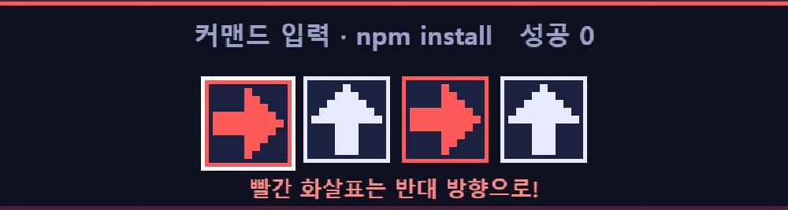
②커맨드 입력 ↑↓←→
화살표 순서대로 방향키를 누릅니다. 그림의 빨간 화살표는 반대 방향으로 눌러야 하고, ?는 차례가 되면 공개됩니다. PERFECT 한 번도 안 틀리고 완성 · MISS 틀린 방향
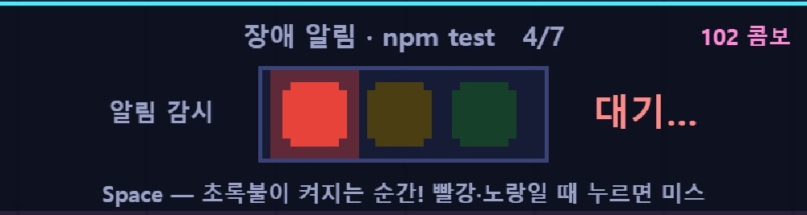
③장애 알림 Space
빨간불(대기)이 초록불로 바뀌는 순간 Space. 노란불은 함정입니다. PERFECT 초록불 직후 빠르게 반응 MISS 빨강·노랑에 누르기, 초록불 놓치기
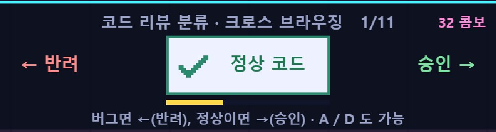
④코드 리뷰 분류 ←→
카드가 버그 발견이면 ←(반려), 정상 코드면 →(승인). 카드 아래 노란 막대가 남은 판단 시간입니다. PERFECT 빠르게 판단 · MISS 잘못 분류, 시간 초과
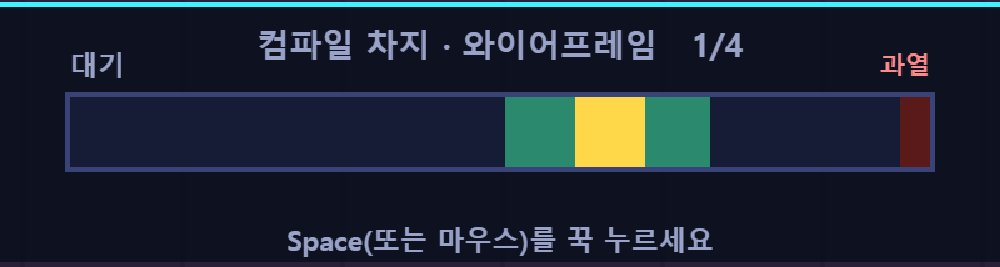
⑤컴파일 차지 Space 꾹
Space를 꾹 누르면 빌드 게이지가 차오릅니다. 초록 구간에서 손을 뗍니다. 오른쪽 끝 붉은 칸까지 차면 과열. PERFECT 노란 부분에서 떼기 · MISS 구간 밖에서 떼기, 과열
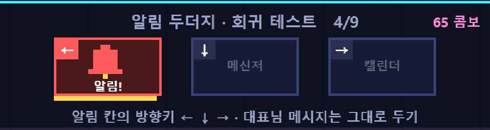
⑥알림 두더지 ←↓→
메일 · 메신저 · 캘린더 세 칸 중 알림이 뜬 칸의 방향키로 끕니다. 👑 대표님 메시지는 끄지 말고 기다립니다. PERFECT 빠르게 끄기 · MISS 다른 칸·대표님 메시지 누르기, 알림 놓치기
7스테이지 진행 화면STAGE
룰 카드 + 시범 플레이시작 전에 미니게임 이름과 누를 키만 크게 보여 주고, 아래 패널에서 시범 플레이가 반복됩니다(누르는 순간 키가 빛남). 헷갈리는 조작만 TIP 한 줄. 시간은 멈춰 있고 Space로 시작합니다.층 클리어 · 정산표작업을 모두 처리하면 STAGE CLEAR! 도장 → 정산표(작업 점수 · 클리어 보너스 · 처리 속도 보너스)가 올라가고 이번 스테이지 점수가 크게 표시됩니다.
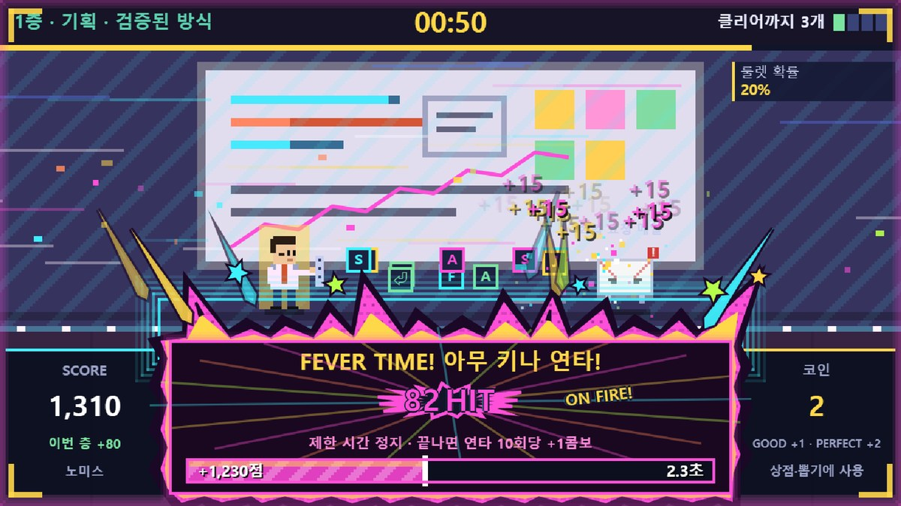
피버 타임FEVER 게이지가 가득 차면 게이지가 두꺼워지며 형광색으로 빛나고 화면 테두리 · 속도선 · 충격파가 터집니다. 5초 동안 아무 키나 연타! 피버 중에는 미니게임과 제한 시간이 멈춥니다.
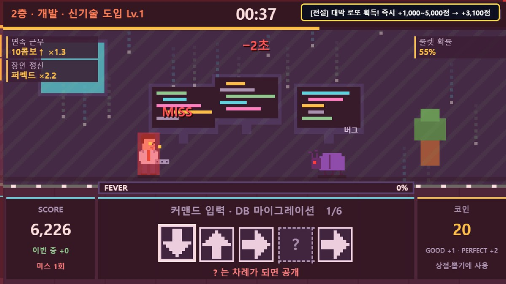
미스잘못 누르면 「너무 빨라!」 같은 문구와 함께 화면이 붉게 번쩍이고, 몬스터가 반격합니다. 본 층에서는 제한 시간 −2초, 콤보가 0이 되고 피버 게이지가 줄어듭니다.
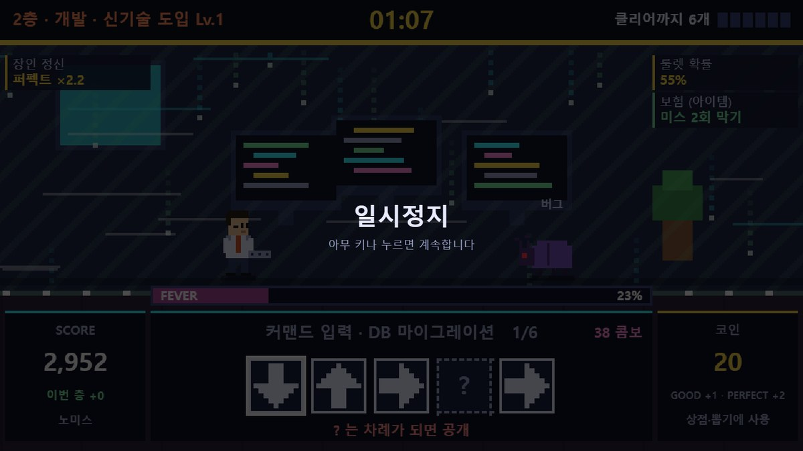
일시정지Esc를 누르거나 창이 비활성화되면 멈춥니다. 아무 키나 누르면 계속합니다.커맨드 변형신기술 루트나 보스에서는 ? 화살표가 섞입니다. 차례가 되어야 방향이 공개되므로 침착하게 보고 누르세요.
8WARNING 중간보스 · 보너스 스테이지EVENTS
⚠ WARNING 룰 카드1층 · 2층을 클리어하면 등장. 다음 층 미니게임을 8초 동안 미리 체험합니다(「8초 동안 최대한 많이!」). 성공할수록 점수(+60)를 얻습니다.WARNING 진행위쪽에 남은 8초가 줄어들고, 몬스터는 「⚠ 강화」 버전으로 나옵니다. 미스해도 제한 시간이 줄지 않으니 마음껏 연습하세요. 성공 횟수가 많을수록 보상 아이템 등급이 좋아집니다.★ 보너스 스테이지 룰 카드층을 클리어한 뒤 확률로 등장합니다(안전 25% · 신기술 45%). 금색 룰 카드로 무작위 미니게임을 알려 줍니다.보너스 진행8초 안에 3번 성공하면 ★ 특수 보상(오픈소스 발견 · 시니어 합류 · 서버 증설 · 투자 유치 중 하나). 성공 1회당 +100점, 코인 +1.
9카드 · 아이템 · 상점 · 루트BUILD
카드는 판 끝까지 쌓이는 빌드, 아이템은 즉시 효과 또는 다음 층 한정 버프입니다. 카드에는 이름과 효과 숫자만 크게, 아래에는 남은 시간 · 코인 · 총점이 나옵니다. 고르는 동안 시간은 멈춥니다.
시작 카드1층을 해 본 뒤 3장 중 1장을 고릅니다. 카드 효과는 모두 숫자로 표시됩니다(예: 커피 한 잔 = 제한 시간 +10초, 성과급 = 층 클리어 ×1.5). 123 또는 ←→ + Enter.보상 카드층마다 한 장씩 더 받습니다. 점수 배율을 쌓을지(야근 수당 · 장인 정신), 시간을 벌지(커피 한 잔 · 리팩토링), 실수를 막을지(린터 · 단축키 등록) 전략을 고르세요.WARNING 보상 아이템WARNING이 끝나면 아이템 3개 중 1개를 무료로 고릅니다. 테두리 색이 등급입니다(일반 · 희귀 · 전설).
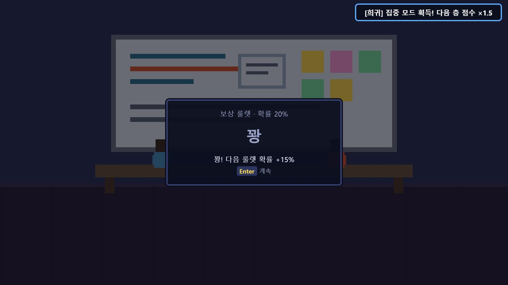
보상 룰렛보상 카드 뒤에 룰렛이 돌아갑니다. 당첨되면 특수 보상(그림은 ★ 투자 유치 +1,000점). 꽝이 나올수록 다음 확률이 올라갑니다.랜덤 카드층 사이 이벤트 중 하나. 뒤집힌 카드 3장 중 1장을 고르면…
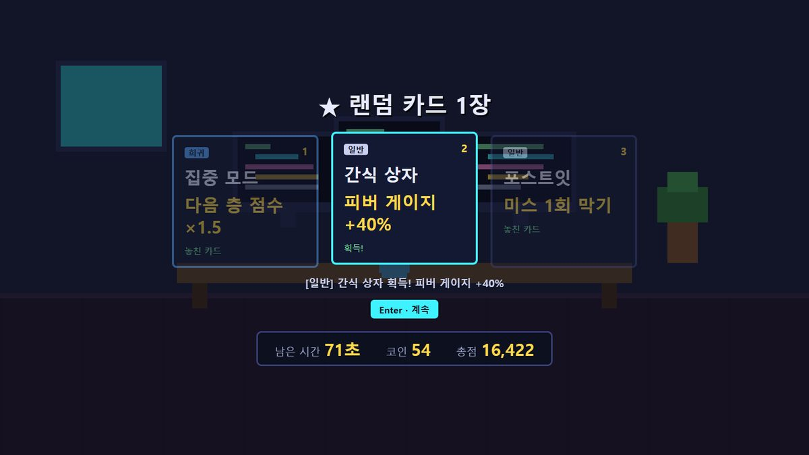
랜덤 카드 결과…고른 카드의 아이템을 얻고 나머지 카드도 공개됩니다. Enter로 다음 단계.상점모은 코인으로 아이템을 삽니다. 123 구매 · R 새로고침 · G 랜덤 뽑기 · Enter 나가기. 가끔 30% 할인 대박 상점이 열립니다. 출시에 성공하면 남은 코인은 1개당 30점으로 바뀝니다.루트 선택2·3층 전에 고릅니다. 검증된 방식(안전, 점수 ×1)과 신기술 도입(난이도 ×2.25 · 작업 수 ×1.5 · 보스 체력 ×2, 대신 점수 ×2부터). 신기술을 고를 때마다 보스 체력이 두 배가 됩니다.
아이템 등급 일반(에너지 드링크 +5초 · 포스트잇 미스 1회 막기 등) · 희귀(더블 샷 +12초 · 집중 모드 다음 층 ×1.5 등) · 전설(황금 키보드 다음 층 ×2 · 타임머신 +25초 · 만능 패스 등). 「다음 층」 효과는 최종 보스에도 적용됩니다.
10최종 보스 「출시 D-Day」BOSS
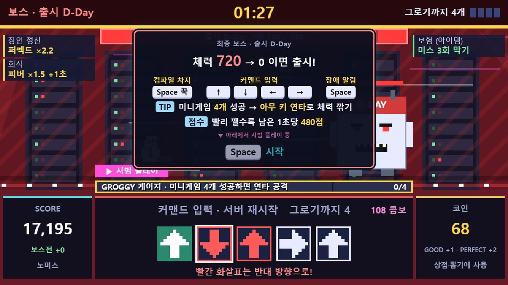
보스 룰 카드체력 → 0이면 출시! 체력은 180에서 신기술을 고를 때마다 ×2. 「점수」 줄은 빨리 깰수록 받는 남은 1초당 점수입니다. 이번 판 미니게임 3종의 키를 한눈에 보여 줍니다. 미니게임 4개를 성공할 때마다 보스가 그로기에 빠집니다. 보스전에서는 10초마다 장애가 발생해 제한 시간이 −3초 줄어듭니다.
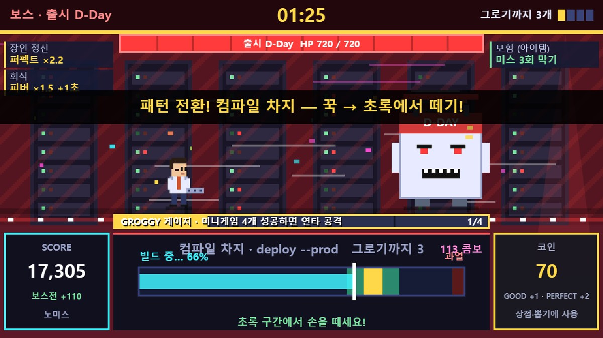
패턴 전환미니게임이 바뀔 때마다 「패턴 전환! 컴파일 차지 — 꾹 → 초록에서 떼기!」처럼 안내가 뜹니다. 위쪽 빨간 바가 보스 체력, 그 아래 GROGGY 게이지가 4칸 차면 그로기입니다.
그로기 연타보스가 X 눈으로 쓰러지고 게이지가 금색으로 빛나면아무 키나 연타! 1회마다 체력 −1과 점수를 얻습니다. 그로기 동안 제한 시간은 멈춥니다. 끝나면 다시 미니게임 4개 → 그로기를 반복합니다.
보스 공략 팁
회식 카드는 연타 효과(×1.5 · +1초)를 키워 줍니다.
리팩토링 · 오픈소스 · 만능 패스는 첫 그로기 게이지를 미리 채워 줍니다.
보스를 쓰러뜨리면 출시 보너스 +2,000점과 남은 시간 · 코인이 점수로 바뀝니다. 남은 1초 = 200점 × 신기술 배율이라 빨리 깰수록 점수가 크게 오릅니다.
11엔딩 · 결과 · 랭킹ENDING
끝난 뒤 화면은 결과에 따라 배경이 다릅니다. 출시 성공은 해가 뜨는 새벽 도시, 시간 종료는 비 오는 밤의 야근 사무실입니다.
출시 성공 컷신배포 진행률이 100%가 되면 SERVICE OPEN! 주인공 만세 · 동료 박수 · 불꽃놀이와 함께 팡파르가 울립니다.
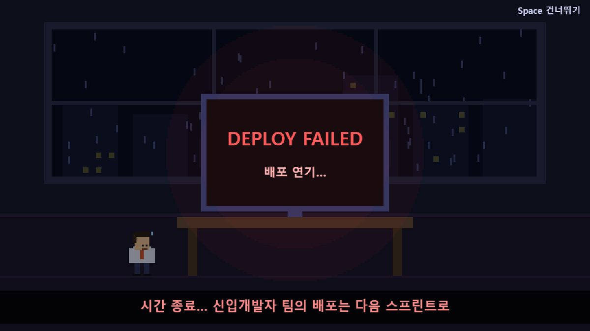
시간 종료 컷신진행률이 멈추고 DEPLOY FAILED가 깜빡입니다. 주인공은 고개를 떨구고 사무실 불이 꺼집니다.엔딩 · RELEASE NOTE점수가 생긴 스테이지와 ★ 보상만 순서대로 한 줄씩 보여 주고, 마지막에 플레이 기록 한 줄. Enter · Space로 결과 화면.
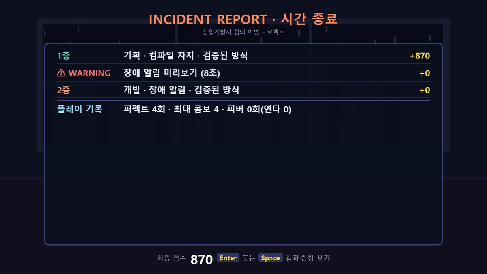
엔딩 · INCIDENT REPORT시간 종료로 끝나면 장애 보고서 형식으로 기록이 나옵니다. 어디까지 갔는지, 몇 번 미스했는지 확인할 수 있습니다.결과 · MISSION COMPLETE등급(S · A · B)과 최종 점수를 크게, 칭호 · 순위 · 도달, 그리고 TOP 5에서 내 줄이 강조됩니다.
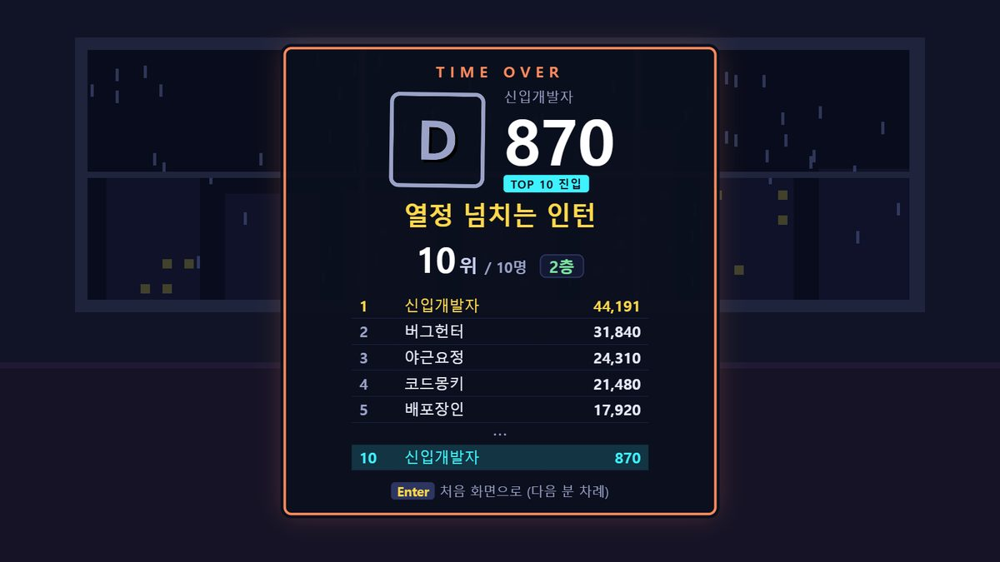
결과 · TIME OVER시간 종료면 주황 테두리와 C · D 등급. 기록은 똑같이 랭킹에 저장됩니다. Enter를 누르면 대기 화면으로 돌아가 다음 사람 차례가 됩니다.
등급과 칭호
등급
S 출시 성공 + 25,000점↑ · A 출시 성공 + 18,000점↑ · B 그 밖의 출시 성공 · C 시간 종료(보스 도달) · D 그 밖
칭호
유니콘 스타트업 CTO(신기술로 출시) · 출시 장인 · 배포 직전의 개발자 · QA 통과 대기 중 · 열정 넘치는 인턴
랭킹 확인 방법
대기 화면 오른쪽: 전체 TOP 10 (닉네임별 최고 점수, 출시 여부 · 도달 층 표시)
결과 화면: 이번 점수의 순위, TOP 5, 등급. 1위면 「★ 전체 1위!」, 10위 안이면 「TOP 10 진입」 배지
기록은 이 PC의 브라우저에 저장되어 게임을 껐다 켜도 유지됩니다. (같은 PC · 같은 브라우저 · 같은 파일 위치 기준. 시크릿 창이나 다른 브라우저에서는 따로 저장)
데모 플레이 기록은 저장되지 않습니다.
기록 초기화(운영자용): 대기 화면에서 R 키를 3초 안에 5번 → 확인
TOP 10대기 화면의 랭킹 표 (예시 기록)
12효과음 · 배경 음악SOUND
모든 소리는 음원 파일 없이 코드(Web Audio)로 직접 합성한 8비트 칩튠입니다. 저작권 걱정이 없고 인터넷 없이도 재생됩니다. M 키로 효과음과 BGM을 함께 켜고 끄며, 설정은 브라우저에 저장됩니다.
배경 음악 (BGM 4곡)
메뉴96 BPM 카드 · 루트 · 상점 · 룰렛 등 선택 화면. 느긋한 사무실 대기 음악 (C–Am–F–G)